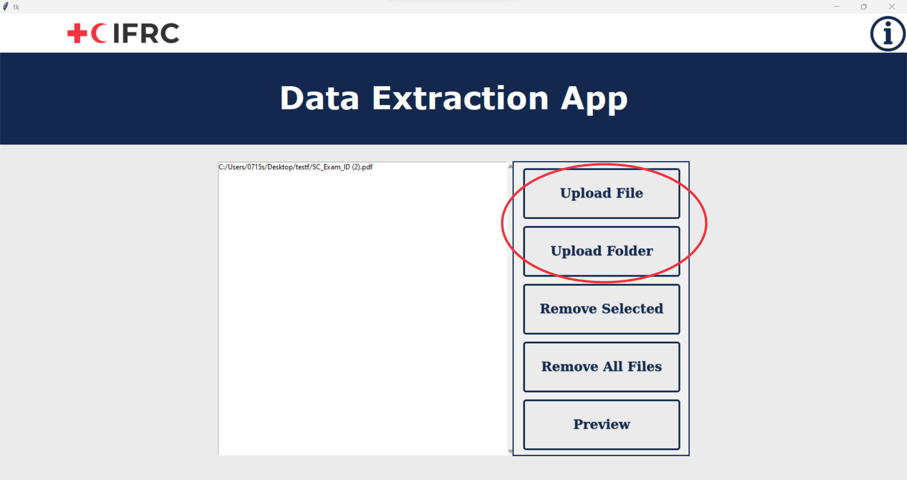

First, upload the files by clicking on the “Upload File” button to upload one file, or “Upload Folder” button to upload a folder. You can also drag and drop files/folders into the drop box on the left for the same purpose. Info button will inform you the steps of how to use the app.
